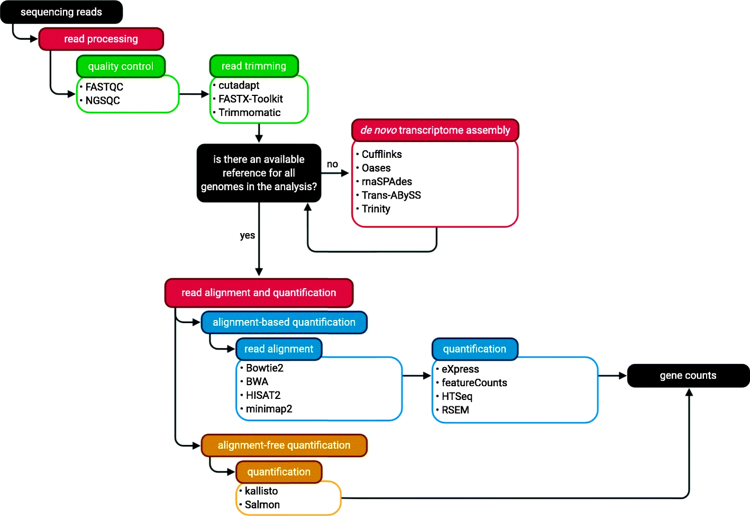

RNA-pipe

It is a simple pipeline of my work at bioinformatics course. [Source Code] It is not easy to explore all of the tools by myself and I remember to spend a whole afternoon in Teaching Building 2 in west campus at January 1st, 2022.
The bioinformatics course in our university really covers a large field so they cannot provide so detailed information about how to use software like diytranscriptomics. You can refer it for downstream analysis.
The simple guideline for the RNA-pipe:
A overview of RNA-seq upstream analysis:

In my RNA-pipe I used fastqc for quality control, fastp for trimming and filtering. Since we are working on the sequencing data from human, we have reference genome. I used Hisat2 for the alignment and HTSeq for quantification. A python script is used to generate final count matrix. If you choose to follow alignment-free quantification (which is usually easier), you can see diytranscritptomics.
Now I will explain these steps based on my own experience.
0. Learn Linux
Linux is easy to learn, at least if you just need to finish some data analysis work. cp, mv, ls, cd and some grammar about usage of variables may be enough. In this RNA-pipe I have used lots of variables like $REFDIR, $FPDIR. Also, to speed up the processing. Also I use lots of “&”, which means to run the command in background. This command is dangerous if you run it on the login node of a cluster. REMEMEBER to run RNA-pipe only in computing node of the cluster.
1. Download Data
The sequencing data are in the .fastq format. But when you use prefetch tool to get data by sra number, you will get .sra file format data. Then fastq-dump is a great tool to convert it to fastq file.
2. Quality Control
Use fastqc to do quality control. If the quality is not satisfying, you can use fastp to filter the “bad” reads. After using fastp I use fastqc again to assure the quality is good.
3. Mapping
It is the most important and time-consuming step. Remember to download and build the reference genome first. I used hisat2-build to build the reference genome. (line 40 of rna-pipe.sh). Then use hisat2 to map your (filtered) fastq files to that reference genome.
4. Quantification
This is the most tricky step. After mapping you get .sam ( “sam” stands for Sequence Alignment/Map format) file (file format). But HTseq (what we will use for quantification) seems to prefer .bam (“b” stands for binary) files with index. So you have to convert the .sam to .bam file and index it before you do the quantification. The code from line 94 to line 114 are used for this process.
After you get .bam file with index, you can use htseq-count to quantify the counts of each transcript. Remember, you will need a suitable .gtf file, which I have downloaded with the reference genome at line 37.
8. Get the Count Matrix
Now it’s time to get the count matrix! I used a new python script for this step. And python is installed with other required software before. The final output file (count matrix) is count_out.csv.